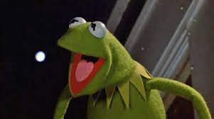

|  | Kermit the Frog's CV |
Jim Hensen Muppet Born in 1955 the everyman frog. Appears in Sesame Street and the Muppet Show. Kermit was awarded an honorary doctorate of Amphibious Letters at Southampton College, New York.He is also the only "amphibian" to have had the honor of addressing the Oxford Union. Enjoys a great cup of tea.For more read Biography |
List of his more well-known appearances.
| News reporting and interviewing | ⭐⭐⭐⭐ |
| Banjo Playing | ⭐⭐⭐⭐⭐ |
| Singing | ⭐⭐⭐⭐⭐ |
| Stage Managing | ⭐⭐⭐⭐ |
| Dancing | ⭐⭐⭐⭐⭐ |
| Tea Brewer | ⭐⭐ |